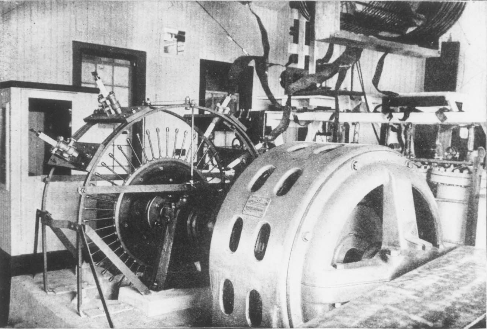

Last easy thing
I wrote this pipeline to clean up and sort the decoded reference signal:
awk 'FS="~" {print $2}' reference-signals.txt | sed -E 's/^[[:space:]]+//' | sort > reference-signals-sorted.txtReading from left to right, this:
- uses awk to separate each line in reference-signals.txt by the tilde, then pass the second part on
- uses sed to remove the leading spaces, then pass the rest along
- uses sort to put the results in alphanumeric order and write the results to the named file
That ended the opening phase of the project where the landscape of tasks was naturally simple and linear.
Reading
I read a few blog posts, wikipedia entries, and slide decks before I found The Paper:
The FT4 and FT8 Communication Protocols
It’s 11 pages, written by the people who designed the method, and explains exactly how everything works, all the way down to the tables they use to translate the human-readable numbers and letters of the payload back and forth into raw bits before and after transmission.
FT8 facts
From The Paper, FT8:
- Is based on a 15-second transmission cycle
- Has a tiny payload, 77 bits per cycle
- Uses a narrow, 50 Hz bandwidth
- Uses continuous phase frequency shift keying CPFSK
- Works 27 dB below the noise floor
- Has a constant-envelope waveform
- Uses forward error correction
- Uses 7x7 Costas arrays for synchronization
CPFSK
Continuous phase frequency shift keying is a special kind of frequency shift key (FSK).
FSK encodes a digital information on a carrier signal by changing the frequency.
Reginald Fessenden came up with FSK in 1910. He also invented amplitude modulation (AM) and worked with Thomas Edison.

1
Dr. Ali Muqaibel’s slides on CPFSK were helpful in general, and specifically with the inset graphic on slide 2 that shows how a digital modulating wave alters a carrier wave.
These lecture notes by Narayan Mandayam and Andrej Domazetovic explain CPFSK well at the beginning and make a special point of clarifying the difference between full response and partial response forms.
Background
At this point, I intentionally stopped taking notes and went into “sponge mode” where I looked up every term I didn’t understand in The Paper and went a few steps down each of these paths and about a dozen others which were tangents:
The tension
I don’t understand any of these topics fully.
Some of them are whole areas of study in themselves.
If I waited to start writing code until I understood them all, I’d never get anywhere.
At the same time, if I had started writing code without spending any time on background, I would have inevitably wasted time implementing solutions based on incorrect understandings.
When to stop reading and start writing?
My hope is to notice and identify the impulse to code when it arrives.
“I could start writing that immediately!” is how this sounds internally, with excitement.
It’s a trap.
I only know it’s a trap because I’ve made this mistake enough times to eventually learn.
Currently, my practice is to wait as long as possible before I start coding.
When the pull to code is overwhelming, maybe then it’s time.
I definitely don’t start coding without an end-to-end plan.
End-to-end plan
I hesitate to share this because it’s based on my hilariously shallow levels of understanding of the technologies at work.
Anyway, here is my sketch plan for decoding a single 15-second window of FT8 transmissions:
- One FFT of the whole passband to identify which 50 Hz sub-frequencies have signals on them.
- For each candidate sub-frequency, scan for Costas arrays to identify timing and carrier frequency drift.
- FFT each of the 58 data-symbol positions, guess which of 8 tones are present, then Gray-decode each guess to its 3-bit payload.
- Error-correct by LDPC-decoding.
- Use the CRC to validate accurate decoding.
- Decode the 77-bit message into letters and numbers using the arbitrary scheme the FT8 inventors picked based on assumptions about the domain-specific use of FT8 for HAM radio signal exchanges.
Footnotes
Used with attribution from the Wikimedia Commons.↩︎
{kind=link}